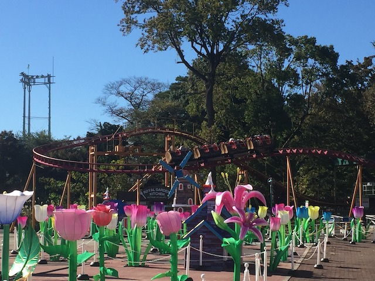
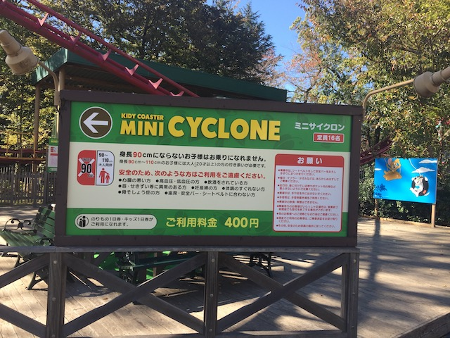

| |

Mini Cyclone Review

For today's review, we'll be going back in time to my visit to Toshimaen to review Mini Cyclone. This was the parks kiddy coaster, and it was....an all right kiddy coaster. I mean, it's a kiddy coaster. It's meant for little kids. But judging as a credit whore, it's pretty meh. Different from most other kiddy coasters, but the way it rides, it pretty much feels the same. Mainly, it has roomy cars. Which is nice. Glad to not have my legs cramped while credit whoring. Get in the cars, pull down the lap bars, and we're off. Roll around a turn, and go up the tiny lifthill. Try and not look the confused parents in the eyes. Oh look, we're already at the top. We roll down a small curved first drop. It's not thrilling or anything like that. I mean, it's a kiddy coaster. Go down a small dip and rise back up, just to head into the biggest drop. YAY!!! It's only 5 ft tall. Aww. Lame. =( Rise up through a small hill, go around a banked turn, a little bit of straight track. Just to get us to the next turn. Go down another small dip, turn around, and....back in the station. Go around another few laps cause...this is a kiddy coaster. *Sigh* Cha-Ching. At least I got this credit before it became scrap metal.
3/10
Location: Toshimaen
Opened: 2009
Built by: Hoei Sangyo
Last Ridden: November 15, 2018
Mini Cyclone Photos

Home
|